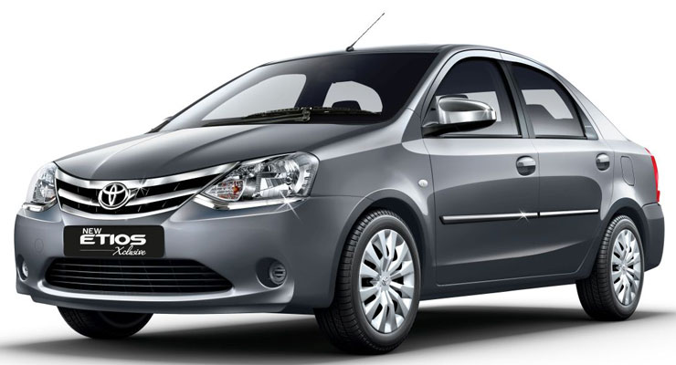
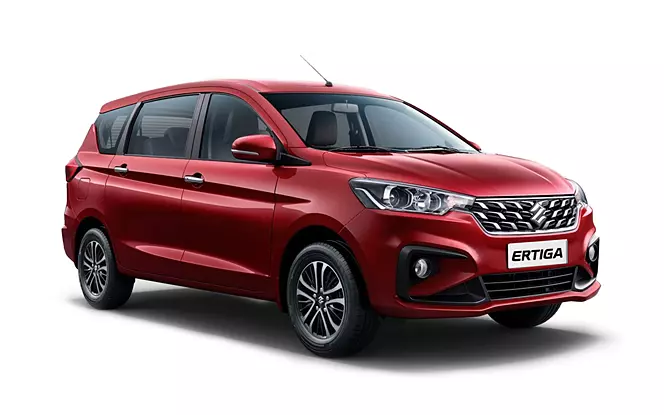
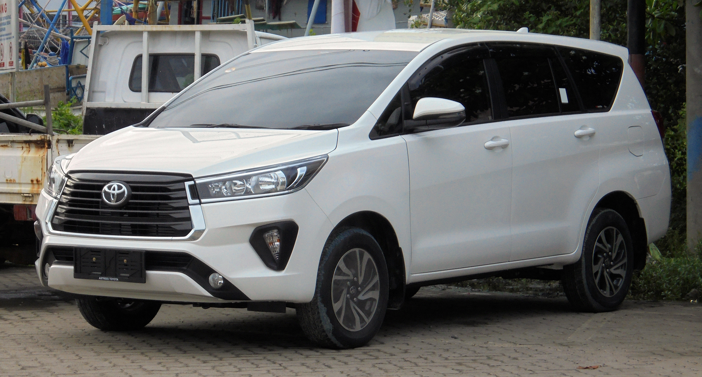
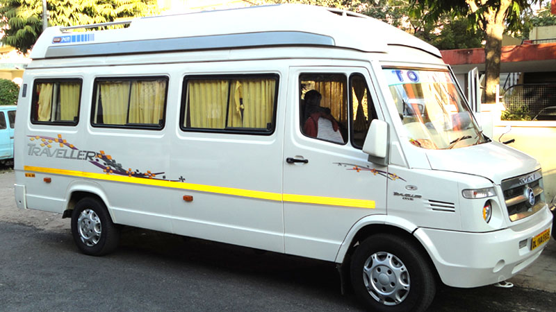

Car Rental & Cab Booking in Rajahmundry
Comfortable local cabs, airport transfers, outstation taxis and group vehicles with professional drivers and clear pricing.
- Airport & railway transfers
- Local sightseeing & outstation travel
- Family, wedding & corporate transport
- Sedans, SUVs & Tempo Travellers
Indicative outstation rate
Multiple group sizes
Call or WhatsApp
City & nearby routes
Travel planning that feels organised from the first call.
Comfortable local cabs, airport transfers, outstation taxis and group vehicles with professional drivers and clear pricing.
Our local travel team helps families, groups, pilgrims and business travellers coordinate the practical side of the journey. Tell us your route, date and group size and we can guide you to the right service.
Clear booking details
Service scope, route and important trip details are explained before confirmation.
Local assistance
Phone and WhatsApp support for practical travel questions around Rajahmundry.
Our tour packages & per-km rates
All rates include driver batta. Toll, parking and permit charges (if any) are billed at actuals and explained upfront.
| Vehicle | Minimum KM | Rate / KM | Driver Batta | |
|---|---|---|---|---|
| Maruti Swift Dzire | 200 km | ₹13 / km | ₹200 | Enquire |
| Tata Zest | 200 km | ₹13 / km | ₹200 | Enquire |
 Toyota Etios | 200 km | ₹14 / km | ₹200 | Enquire |
 Maruti Ertiga | 300 km | ₹15 / km | ₹300 | Enquire |
 Chevrolet Tavera | 300 km | ₹16 / km | ₹300 | Enquire |
| Toyota Innova | 300 km | ₹17 / km | ₹300 | Enquire |
 Toyota Innova Crysta | 300 km | ₹20 / km | ₹700 | Enquire |
 Tempo Traveller 12-Seater Tempo Traveller 12-Seater | 300 km | ₹24 / km | ₹400 | Enquire |
 Tempo Traveller 17-Seater Tempo Traveller 17-Seater | 300 km | ₹32 / km | ₹600 | Enquire |
 Tempo Traveller 20-Seater Tempo Traveller 20-Seater | 300 km | ₹35 / km | ₹700 | Enquire |
 Tempo Traveller 26-Seater Tempo Traveller 26-Seater | 300 km | ₹42 / km | ₹400 | Enquire |
| Bus 40-Seater | 300 km | ₹50 / km | ₹500 | Enquire |
Rates shown are indicative for outstation trips and may vary by season and route. Confirm final pricing on WhatsApp before booking.
Reasons families & corporates choose our cabs
Professional Drivers
Verified, experienced and courteous.
GPS-enabled Vehicles
Track your ride from pickup to drop.
On-Time Pickup
Punctual dispatch, every booking.
AC & Sanitised Cars
Cleaned and checked before every trip.
Car Rental in Rajahmundry: A Practical Planning Guide
Useful details to help you plan your journey, understand the service and prepare the information needed before confirming a booking.
Choose a vehicle that suits the whole journey
The right vehicle depends on the number of passengers, the distance, the luggage you plan to carry and the places you want to visit. A compact sedan may work well for a small family or a point-to-point city transfer, while a larger vehicle can be more comfortable when several people are travelling together. Share the passenger count and luggage needs when asking about car rental in Rajahmundry so the vehicle can be matched to the journey instead of choosing by price alone.
For a mixed itinerary with several stops, allow enough time for travel between locations, meals and sightseeing. If your plan includes a train arrival, the Rajahmundry Railway Station guide can help you prepare for pickup timing. For onward travel that starts with a flight, mention the flight arrival time and airport so the transfer can be discussed with suitable buffer time. Vehicle and driver availability should always be reconfirmed for the requested date.
Local transfers, station pickup and airport journeys
A pre-arranged cab can make arrival day easier, especially when travelling with children, older family members or multiple bags. When requesting a railway station transfer, share the train number if known, the expected arrival time, the number of passengers and a reachable contact number. For an airport transfer, include the airport, flight details and whether you need a pickup or drop-off. These details help both sides understand the pickup plan before the journey begins.
If your trip continues beyond a single transfer, mention the complete route instead of booking each leg without context. For example, a visitor may need a cab from the station to a hotel and then transport for sightseeing the following day. A local plan can also connect with bus ticket booking, train ticket booking or flight ticket booking when different transport modes are needed. Timing and fares depend on the route, vehicle, waiting time and the confirmed service terms.
Outstation trips and sightseeing plans
Outstation travel usually needs more planning than a short city ride. Tell the team whether you want a one-way drop, a return journey, multiple sightseeing stops or a vehicle available for the day. Ask how the quoted fare treats distance, driver allowance, tolls, parking, permits and waiting time. Confirm these items before proceeding so the total expected cost is clear and there is less uncertainty during the trip.
Visitors planning Godavari sightseeing may be interested in a Papikondalu tour or a Maredumilli nature trip. These destinations can involve different transport and package arrangements, so confirm the planned pickup and drop points rather than assuming the cab fare includes every tour activity. For a temple-focused route, a devotional yatra package may suit a longer itinerary with several sacred destinations. The best arrangement depends on your dates, group size and the places you want to cover.
What to share when requesting a cab
A clear enquiry normally includes the travel date, pickup location, destination, preferred pickup time, passenger count, luggage details and whether the trip is one-way or return. For a full-day booking, list the main stops and the approximate time you expect to spend at each location. If your schedule is flexible, state that as well; it may help the team discuss alternative timings or a more suitable vehicle category.
Before confirming, check the vehicle type, included kilometres or hours where applicable, additional-kilometre and waiting charges, driver allowance, tolls, parking, cancellation terms and payment schedule. Keep the booking confirmation and contact details accessible during travel. If the plan changes, communicate as early as possible because route changes or extra stops may affect availability and price. Any special needs, such as child seats or easier entry for an older passenger, should be mentioned in advance for confirmation.
Planning a connected Rajahmundry itinerary
A car booking can be one part of a wider trip. Travellers arriving by train can plan a station transfer before continuing to a hotel, while visitors using intercity buses may need a local cab between the bus boarding point and their accommodation. Air travellers can coordinate a road transfer around their flight schedule. For each connection, keep a sensible time buffer and avoid assuming that transport is included unless the selected booking explicitly confirms it.
For a smooth enquiry, send the itinerary in one message: dates, origin, destinations, number of travellers, requested vehicle and any fixed appointments. The team can then respond to the actual trip requirements instead of estimating from a destination name alone. You can also compare a car journey with bus or train options for longer routes. Share your plan through the listed contact channels and confirm all inclusions, exclusions and pickup arrangements before departure.
Car & Cab Rentals in Pictures
See colourful moments related to Car & Cab Rentals, curated for Rajahmundry travellers.


Frequently Asked Questions
Common questions about this page and the related Rajahmundry travel service.
Vehicle availability can include cars and larger group vehicles depending on the trip. Share the passenger count and route to identify a suitable option.
Yes. Airport and railway station transfers can be requested with the pickup time, location and passenger details.
Yes. Outstation trips can be arranged based on destination, travel dates, vehicle requirement and availability.
Yes. Local sightseeing and destination transfers can be requested by sharing the date, places you want to visit and group size.
Send the date, pickup point, destination, approximate kilometres or itinerary and passenger count. The team will confirm the applicable fare and vehicle availability.